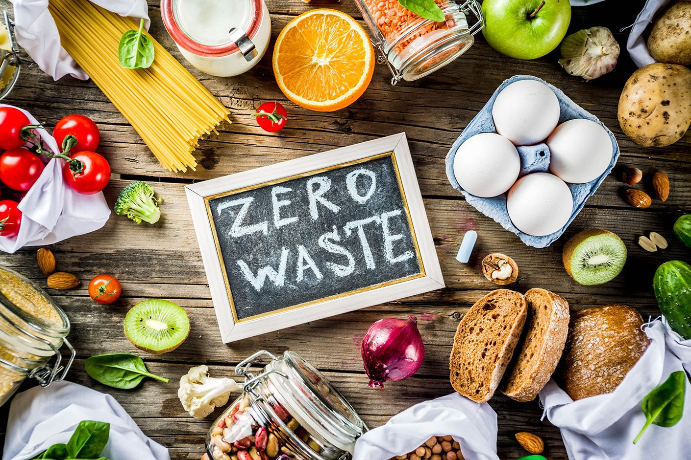
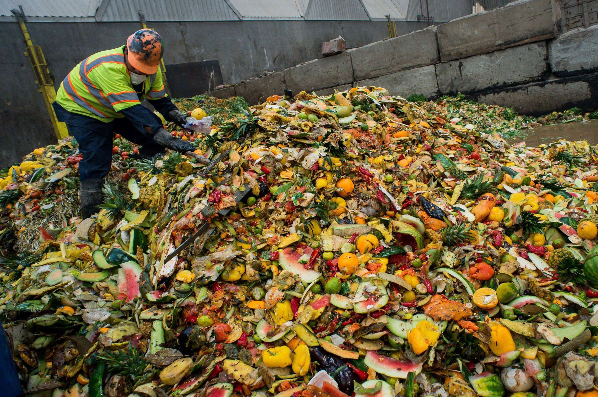

Welcome to SDG 2: Zero Hunger
This webpage aims to raise awareness and provide solutions for addressing hunger around the world. SDG 2 focuses on achieving "Zero Hunger" by ensuring that everyone has access to nutritious food. Through this platform, we aim to educate and inspire action to eradicate hunger and promote sustainable food systems.
Millions suffer from hunger every day

1/3rd of all food is wasted while people starve
The Hunger Problem
The issue of hunger is not just about food scarcity; it is rooted in poverty, inequality, and lack of access to resources. Below are some of the key factors contributing to hunger:
Poverty
Poverty is one of the leading causes of hunger worldwide, affecting millions of people every day.
Families living in poverty struggle to afford basic necessities, including nutritious food,
clean water, and proper healthcare. This lack of access to essential resources
creates a vicious cycle where poor health, malnutrition, and reduced productivity further deepen poverty.

Food Waste
Food waste is a critical issue contributing to global hunger, as nearly one-third of all
food produced is wasted, while millions of people suffer from food insecurity.
This wastage occurs at multiple stages of the food supply chain—from farms to processing plants,
transportation, retail stores, and households. While surplus food is discarded, millions of people
struggle to access nutritious meals,
highlighting the need for better food management and distribution systems.
Organizations Fighting Hunger
Several organizations are actively working to address the hunger crisis. They are committed to providing food,
promoting sustainable agriculture, and ensuring food security for all. Below are some key organizations and their contributions:
Akshaya Patra
The Akshaya Patra Foundation is one of the largest non-profit organizations in India working to
eliminate hunger among school children. It operates the Mid-Day Meal Program, providing nutritious
meals to millions of underprivileged children across the country. By ensuring that students receive
at least one wholesome meal per day, Akshaya Patra helps improve school attendance, academic
performance, and overall health.
Our Work
World Food Programme
The World Food Programme (WFP) is the largest humanitarian organization dedicated to
ending world hunger by providing food aid and nutritional support to vulnerable populations. Operating in over 120 countries,
WFP plays a crucial role in responding to emergencies, supporting communities affected by wars, natural disasters, and economic crises.
Feeding India
Feeding India, an initiative by Zomato, aims to fight hunger and food wastage by distributing surplus food
to underprivileged communities. The organization operates food recovery programs, community fridges, and
meal distribution campaigns across India, ensuring that excess food from restaurants, corporate offices,
and events reaches those in need.
Learn More
Action Against Hunger
Action Against Hunger is a global humanitarian organization that works to eradicate malnutrition and provide
food security, clean water, and health services to vulnerable populations. It operates in over 50 countries,
focusing on sustainable solutions to hunger through community-based nutrition programs, food aid, and emergency relief efforts.
Support Their Work
About Us
We are a global initiative dedicated to the eradication of hunger, working tirelessly to
ensure that no one is left behind when it comes to access to nutritious food. Our mission is not
only to provide immediate food relief but also to create lasting, sustainable solutions that tackle
the root causes of hunger and food insecurity. By partnering with local and global organizations,
governments, and communities, we aim to empower individuals and families, improve agricultural practices,
and address the challenges of poverty, climate change, and food distribution
Our Vision and Mission
Our vision is a world free from hunger, where everyone has access to nutritious food.
We are committed to achieving Zero Hunger by 2030 through strategic partnerships with governments,
NGOs, and communities. Our mission focuses on sustainable solutions, including food aid,
better agriculture, and food education. We empower communities to fight poverty, malnutrition,
and food insecurity. By promoting innovation
and fair policies, we strive to create a hunger-free future for all.
Our Team
Our team is a dedicated group of nutritionists, researchers, policymakers, and volunteers committed to
fighting hunger. We work together to develop sustainable food solutions and improve global food security.
Our experts focus on nutrition, agriculture, and community outreach to create long-term impact.
Through collaborations with local and global organizations, we ensure food reaches those in need.
Passion and innovation drive us to find effective solutions for hunger. Together, we strive for a world without hunger.
How You Can Help
Your support is crucial in our mission to end hunger. Here’s how you can help:
- Donate –Your contributions provide meals and essential resources for those in need. Even a small donation can help feed a child and support long-term hunger relief programs.
- Volunteer – Get involved in local communities by assisting in food distribution and meal preparation. Your time and effort can directly impact families struggling with food insecurity.
- Spread Awareness – Share information about the importance of SDG 2: Zero Hunger through social media, blogs, and community events. Educating others can inspire collective action and policy changes to fight hunger.
What People Say
"Thanks to the Zero Hunger initiative, my community has received not just food but also hope for
a better tomorrow. The support has allowed us to focus on rebuilding our lives instead of worrying
about where our next meal will come from. Through the meals provided, children are able to
attend school regularly and focus on their studies. It has been a life-changing experience for
so many families, and we are deeply grateful for the kindness
and generosity of those behind this cause." - John Doe, Volunteer
"Through donations, we have been able to feed thousands of children,
ensuring they don't go to bed hungry. The impact has been far-reaching,
not only providing meals but also giving children the energy and strength to focus on their education.
These donations help create a healthier and more productive generation, breaking the cycle of poverty.
Knowing that my contribution is making a difference in the lives of children fills me with immense pride.
It’s incredible to see the smiles on their faces,
knowing that each meal brings hope for a brighter future."
Jane Smith, Donor